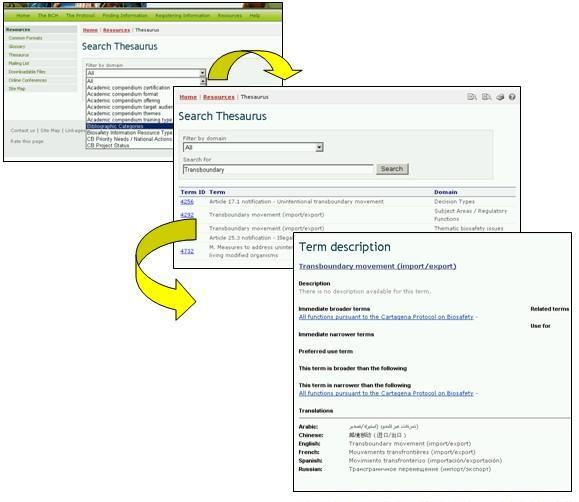
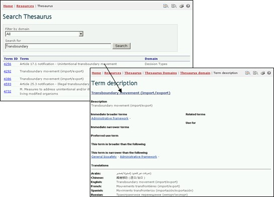

用语汇编提供了用于某一特定语境下的已界定的用语和有关同义词列表，或可称之为“受控词汇表”。这些用语用于在生物安全信息交换所上登记和搜索信息。
通过 资源 页链接，用户可进入 用语汇编 页，在该页上方提供了搜索界面，下方提供了按字母顺序排列的用语域列表。

图 46

图 47
搜索用语汇编 界面提供了下拉式菜单，可用于在用语汇编中选择域，并在搜索中使用关键词或词语框。用户输入感兴趣的域和/或关键词并选择 键。
在结果列表中，用户可从用语ID一栏中选择一个用语，得到有关该用语在生物安全信息交换所中央门户网站中用法的更多信息。这样用户被带入用语描述 纪录条，该纪录条提供有关该用语的含义详情，以及在生物安全信息交换所中央门户网站中的用法，包括该用语的更为广义、狭义和建议的用法以及六种联合国官方语言的译文。
举例：如果用户希望了解“越境”这一用语在议定书有关活动中的用法，可在 Search Thesaurus（搜索用语汇编） 页面上在Filter by domain（按域筛选） 框中输入“所有”这一搜索项， 并在搜索框中选择“越境”。
选择 键将提供一些纪录条列表，说明“越境”这一用语在生物安全信息交换所中央门户网站不同域中是如何使用的。搜索结果（2008年1月）列出了该用语在生物安全信息交换所内四个域中的五种用法。

图 48
用语域列表按字母顺序列出了在每一个域中使用的用语。并且说明哪些为“建议”用语、“非建议”用语或“相关”用语。

图 49
在 用语汇编域 页面上的用语树列表中选择一个用语既将用户带入 用语描述 纪录条。该纪录条提供了该用语的含义详情，以及在生物安全信息交换所中的用法，包括该用语的更为广义、狭义和建议的用法以及六种联合国官方语言的译文。在用语描述中，受控词汇表中建议使用的用语是为索引和提取信息目的在各近义词中选择使用的用语。例如，在生物安全信息交换所中对于玉米一词建议使用的用语是maize而不是corn.